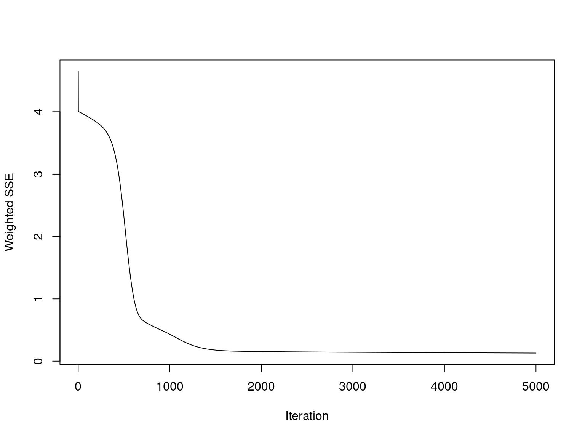
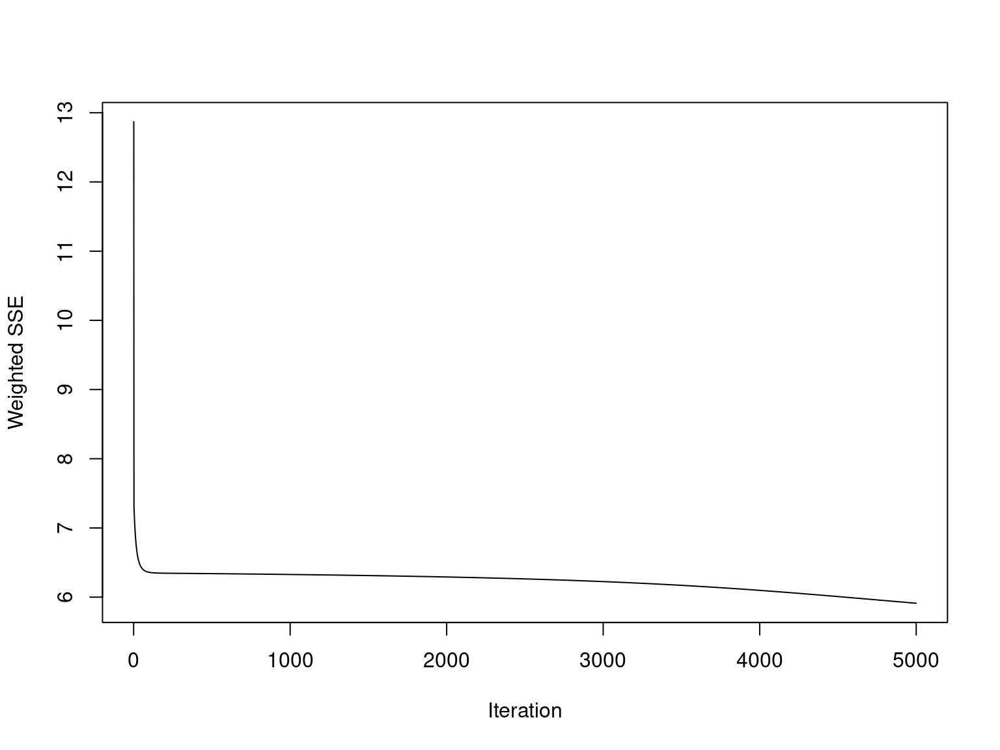
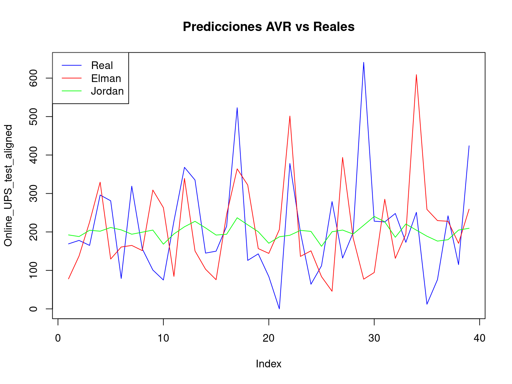

Actividad 7 Modelos de pronostico con Redes Neuronales
7.1 Preparando los datos de entrenamiento
Como primer paso es necesario normalizar las series de tiempo
#Normaliza los datos para que estén entre 0 y 1
normalize <- function(x) (x - min(x)) / (max(x) - min(x))
AVR_norm = normalize(AVR_ts)
Line_UPS_norm = normalize(Line_UPS_ts)
Online_UPS_norm = normalize(Online_UPS_ts)
Storage_Battery_norm = normalize(Storage_Battery_ts)Las series de tiempo poseen un 174 registros por lo tanto se utilizara el 75% (130) de los datos para el entrenamiento y el 25% (44) de los datos para la prueba
#Creando conjuntos de entrenamiento
AVR_train = AVR_norm[1:130]
AVR_test = AVR_norm[131:174]
Line_UPS_train = Line_UPS_norm[1:130]
Line_UPS_test = Line_UPS_norm[131:174]
Online_UPS_train = Online_UPS_norm[1:130]
Online_UPS_test = Online_UPS_norm[131:174]
Storage_Battery_train = Storage_Battery_norm[1:130]
Storage_Battery_test = Storage_Battery_norm[131:174]A continuacion se crean las ventanas deslizantes para representar las entradas (X) y salidas (Y) del modelo
#Generar secuencias para entrada y salida
lagData <- function(data, lag = 1) {
x <- embed(data, lag + 1)
list(X = x[, -ncol(x)], Y = x[, ncol(x)])
}
AVR_lagged <- lagData(AVR_norm, lag = 5)
Line_UPS_lagged <- lagData(Line_UPS_norm, lag = 5)
Online_UPS_lagged <- lagData(Online_UPS_norm, lag = 5)
Storage_Battery_lagged <- lagData(Storage_Battery_norm, lag = 5)
# Crear ventanas deslizantes para los datos de prueba
AVR_test_lagged <- lagData(AVR_test, lag = 5)
Line_UPS_test_lagged <- lagData(Line_UPS_test, lag = 5)
Online_UPS_test_lagged <- lagData(Online_UPS_test, lag = 5)
Storage_Battery_test_lagged <- lagData(Storage_Battery_test, lag = 5)
#Eliminando los registros NA
#AVR_lagged$X <- AVR_lagged$X[-c(1:5), ]
#AVR_lagged$Y <- AVR_lagged$Y[-c(1:5)]
#Line_UPS_lagged$X <- Line_UPS_lagged$X[-c(1:5), ]
#Line_UPS_lagged$Y <- Line_UPS_lagged$Y[-c(1:5)]
#Online_UPS_lagged$X <- Online_UPS_lagged$X[-c(1:5), ]
#Online_UPS_lagged$Y <- Online_UPS_lagged$Y[-c(1:5)]
#Storage_Battery_lagged$X <- Storage_Battery_lagged$X[-c(1:5), ]
#Storage_Battery_lagged$Y <- Storage_Battery_lagged$Y[-c(1:5)]7.2 Implementación del Modelo de Red Neuronal - ELMAN
7.2.1 Configuración y entrenamiento del modelo
Para la configuracion de los modelos Elman se configura una capa con 10 neuronas y una segunda capa con 1 neurona, se definen el maximo numero de iteraciones en 5000 y una tasa de aprendizaje de 0.1.
AVR_model_elman <- elman(
AVR_lagged$X, AVR_lagged$Y,
size = c(10, 1), # Número de neuronas en la capa oculta
maxit = 5000, # Máximo número de iteraciones
learnFuncParams = c(0.1), # Tasa de aprendizaje
linOut = TRUE # Salida lineal
)
Line_UPS_model_elman <- elman(
Line_UPS_lagged$X, Line_UPS_lagged$Y,
size = c(10, 1), # Número de neuronas en la capa oculta
maxit = 5000, # Máximo número de iteraciones
learnFuncParams = c(0.1), # Tasa de aprendizaje
linOut = TRUE # Salida lineal
)
Online_UPS_model_elman <- elman(
Online_UPS_lagged$X, Online_UPS_lagged$Y,
size = c(10, 1), # Número de neuronas en la capa oculta
maxit = 5000, # Máximo número de iteraciones
learnFuncParams = c(0.1), # Tasa de aprendizaje
linOut = TRUE # Salida lineal
)
Storage_Battery_model_elman <- elman(
Storage_Battery_lagged$X, Storage_Battery_lagged$Y,
size = c(10, 1), # Número de neuronas en la capa oculta
maxit = 5000, # Máximo número de iteraciones
learnFuncParams = c(0.1), # Tasa de aprendizaje
linOut = TRUE # Salida lineal
)Se observa que los modelos comienzan a converger antes de las 1000 iteraciones.



 ### Evaluación del Modelo ELMAN
### Evaluación del Modelo ELMAN
El modelo AVR tiene un error promedio de aproximadamente 2959 en las predicciones. Esto indica una desviación moderada de las predicciones respecto a los valores reales.
El modelo Line UPS tiene el mayor RMSE, lo que indica que este modelo está menos ajustado y produce predicciones con mayor error.
Este modelo tiene el menor RMSE. Es el más preciso entre los modelos evaluados, ya que sus predicciones están más cercanas a los valores reales.
El modelo Storage Battery tiene un error intermedio, mostrando un desempeño moderado en comparación con los otros.
denormalize <- function(x, original) x * (max(original) - min(original)) + min(original)
RMSE <- function(real, pred) sqrt(mean((real - pred)^2))
#Evaluación del Modelo ELMAN
AVR_predictions_elman = predict(AVR_model_elman, AVR_test_lagged$X)
AVR_predictions_elman = denormalize(AVR_predictions_elman, AVR_ts)
AVR_rmse_elman = RMSE(AVR_test_lagged$Y, AVR_predictions_elman)
Line_UPS_predictions_elman = predict(Line_UPS_model_elman, Line_UPS_test_lagged$X)
Line_UPS_predictions_elman = denormalize(Line_UPS_predictions_elman, Line_UPS_ts)
Line_UPS_rmse_elman = RMSE(Line_UPS_test_lagged$Y, Line_UPS_predictions_elman)
Online_UPS_predictions_elman = predict(Online_UPS_model_elman, Online_UPS_test_lagged$X)
Online_UPS_predictions_elman = denormalize(Online_UPS_predictions_elman, Online_UPS_ts)
Online_UPS_rmse_elman = RMSE(Online_UPS_test_lagged$Y, Online_UPS_predictions_elman)
Storage_Battery_predictions_elman = predict(Storage_Battery_model_elman, Storage_Battery_test_lagged$X)
Storage_Battery_predictions_elman = denormalize(Storage_Battery_predictions_elman, Storage_Battery_ts)
Storage_Battery_rmse_elman = RMSE(Storage_Battery_test_lagged$Y, Storage_Battery_predictions_elman)
resultados_elman <- data.frame(
Modelo = c("AVR", "Line UPS", "Online UPS", "Storage Battery"),
RMSE = c(AVR_rmse_elman, Line_UPS_rmse_elman, Online_UPS_rmse_elman, Storage_Battery_rmse_elman)
)
# Imprimir la tabla de resultados
print(resultados_elman)## Modelo RMSE
## 1 AVR 2758.5099
## 2 Line UPS 4443.9952
## 3 Online UPS 240.7781
## 4 Storage Battery 2348.30377.3 Implementación del Modelo de Red Neuronal - JORDAN
7.3.1 Configuración y entrenamiento del modelo
Para la configuracion de los modelos Jordan se configura una capa con 10 neuronas, se definen el maximo numero de iteraciones en 5000 y una tasa de aprendizaje de 0.01.
AVR_model_jordan <- jordan(
AVR_lagged$X, AVR_lagged$Y,
size = c(10), # Número de neuronas en la capa oculta
maxit = 5000, # Máximo número de iteraciones
learnFuncParams = c(0.01), # Tasa de aprendizaje
linOut = TRUE # Salida lineal
)
Line_UPS_model_jordan <- jordan(
Line_UPS_lagged$X, Line_UPS_lagged$Y,
size = c(10), # Número de neuronas en la capa oculta
maxit = 5000, # Máximo número de iteraciones
learnFuncParams = c(0.01), # Tasa de aprendizaje
linOut = TRUE # Salida lineal
)
Online_UPS_model_jordan <- jordan(
Online_UPS_lagged$X, Online_UPS_lagged$Y,
size = c(10), # Número de neuronas en la capa oculta
maxit = 5000, # Máximo número de iteraciones
learnFuncParams = c(0.01), # Tasa de aprendizaje
linOut = TRUE # Salida lineal
)
Storage_Battery_model_jordan <- jordan(
Storage_Battery_lagged$X, Storage_Battery_lagged$Y,
size = c(10), # Número de neuronas en la capa oculta
maxit = 5000, # Máximo número de iteraciones
learnFuncParams = c(0.01), # Tasa de aprendizaje
linOut = TRUE # Salida lineal
)Se observa que los modelos comienzan a converger a un numero menor de interesaciones en comparacion con los modelos de ELMAN



 ### Evaluación del Modelo Jordan
### Evaluación del Modelo Jordan
El RMSE para el modelo AVR ha mejorado en comparación con el modelo Elman (antes: 2959.4477), indicando que el modelo Jordan produce predicciones más precisas para este caso.
Para el modelo de la serie de tiempo Line UPS se obtiene un RMSE de 3717.9091, el error sigue siendo alto, este valor es mejor que el obtenido con el modelo Elman (antes: 4490.0776).
El modelo Jordan mantiene un bajo RMSE para la serie de tiempo Online UPS de 202.8492, incluso mejorando ligeramente el resultado del modelo Elman (antes: 245.0512), reafirmando que este es un caso donde los modelos funcionan bien.
Como resultado de la evaluación del modelo de la serie Storage Battery se obtuvo un RMSE de 1677.6651 se observa una mejora significativa para la serie de tiempo respecto al modelo Elman (antes: 2311.0869), lo que indica un mejor ajuste con el modelo Jordan.
#Evaluación del Modelo Jordan
denormalize <- function(x, original) x * (max(original) - min(original)) + min(original)
RMSE <- function(real, pred) sqrt(mean((real - pred)^2))
AVR_predictions_jordan = predict(AVR_model_jordan, AVR_test_lagged$X)
AVR_predictions_jordan = denormalize(AVR_predictions_jordan, AVR_ts)
AVR_rmse_jordan = RMSE(AVR_test_lagged$Y, AVR_predictions_jordan)
Line_UPS_predictions_jordan = predict(Line_UPS_model_jordan, Line_UPS_test_lagged$X)
Line_UPS_predictions_jordan = denormalize(Line_UPS_predictions_jordan, Line_UPS_ts)
Line_UPS_rmse_jordan = RMSE(Line_UPS_test_lagged$Y, Line_UPS_predictions_jordan)
Online_UPS_predictions_jordan = predict(Online_UPS_model_jordan, Online_UPS_test_lagged$X)
Online_UPS_predictions_jordan = denormalize(Online_UPS_predictions_jordan, Online_UPS_ts)
Online_UPS_rmse_jordan = RMSE(Online_UPS_test_lagged$Y, Online_UPS_predictions_jordan)
Storage_Battery_predictions_jordan = predict(Storage_Battery_model_jordan, Storage_Battery_test_lagged$X)
Storage_Battery_predictions_jordan = denormalize(Storage_Battery_predictions_jordan, Storage_Battery_ts)
Storage_Battery_rmse_jordan = RMSE(Storage_Battery_test_lagged$Y, Storage_Battery_predictions_jordan)
resultados_jordan <- data.frame(
Modelo_jordan = c("AVR", "Line UPS", "Online UPS", "Storage Battery"),
RMSE = c(AVR_rmse_jordan, Line_UPS_rmse_jordan, Online_UPS_rmse_jordan, Storage_Battery_rmse_jordan)
)
# Imprimir la tabla de resultados
print(resultados_jordan)## Modelo_jordan RMSE
## 1 AVR 2024.0290
## 2 Line UPS 3688.4414
## 3 Online UPS 201.1804
## 4 Storage Battery 1653.2940# Función de desnormalización
denormalize = function(x, original) x * (max(original) - min(original)) + min(original)
AVR_test_aligned = AVR_test[-(1:5)]
AVR_test_aligned = denormalize(AVR_test_aligned, AVR_ts)
plot(AVR_test_aligned, type = "l", col = "blue", main = "Predicciones AVR vs Reales")
lines(AVR_predictions_elman, col = "red")
lines(AVR_predictions_jordan, col = "green")
legend("topleft", legend = c("Real", "Elman", "Jordan"), col = c("blue", "red", "green"), lty = 1)
# Función de desnormalización
denormalize = function(x, original) x * (max(original) - min(original)) + min(original)
Line_UPS_test_aligned = Line_UPS_test[-(1:5)]
Line_UPS_test_aligned = denormalize(Line_UPS_test_aligned, Line_UPS_ts)
plot(Line_UPS_test_aligned, type = "l", col = "blue", main = "Predicciones Line UPS vs Reales")
lines(Line_UPS_predictions_elman, col = "red")
lines(Line_UPS_predictions_jordan, col = "green")
legend("topleft", legend = c("Real", "Elman", "Jordan"), col = c("blue", "red", "green"), lty = 1)
# Función de desnormalización
denormalize = function(x, original) x * (max(original) - min(original)) + min(original)
Online_UPS_test_aligned = Online_UPS_test[-(1:5)]
Online_UPS_test_aligned = denormalize(Online_UPS_test_aligned, Online_UPS_ts)
plot(Online_UPS_test_aligned, type = "l", col = "blue", main = "Predicciones AVR vs Reales")
lines(Online_UPS_predictions_elman, col = "red")
lines(Online_UPS_predictions_jordan, col = "green")
legend("topleft", legend = c("Real", "Elman", "Jordan"), col = c("blue", "red", "green"), lty = 1)
# Función de desnormalización
denormalize = function(x, original) x * (max(original) - min(original)) + min(original)
Storage_Battery_test_aligned = Storage_Battery_test[-(1:5)]
Storage_Battery_test_aligned = denormalize(Storage_Battery_test_aligned, AVR_ts)
plot(Storage_Battery_test_aligned, type = "l", col = "blue", main = "Predicciones Storage Battery vs Reales")
lines(Storage_Battery_predictions_elman, col = "red")
lines(Storage_Battery_predictions_jordan, col = "green")
legend("topleft", legend = c("Real", "Elman", "Jordan"), col = c("blue", "red", "green"), lty = 1)